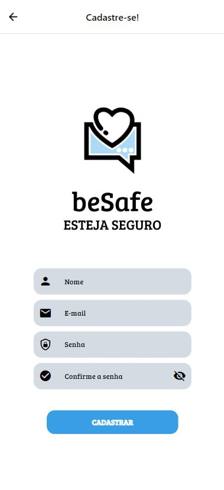
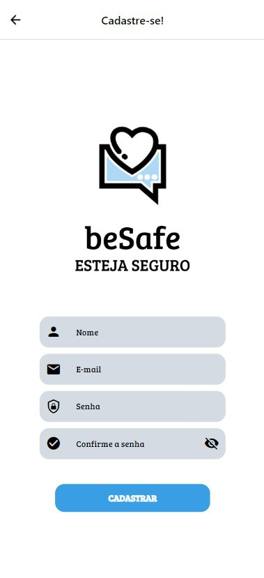
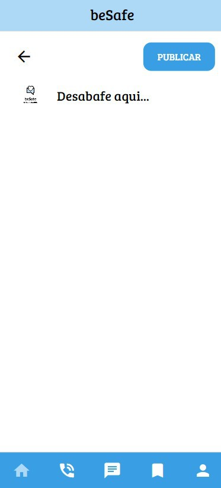
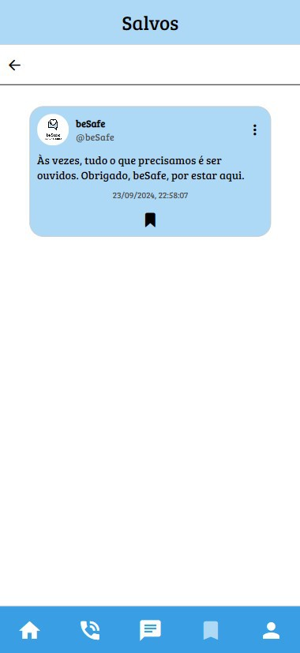
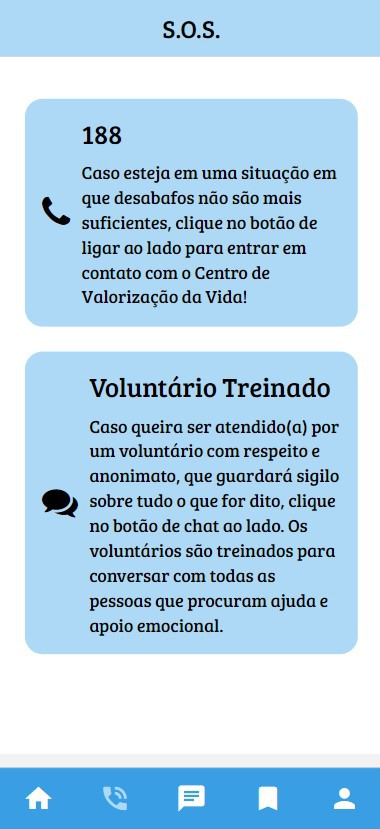
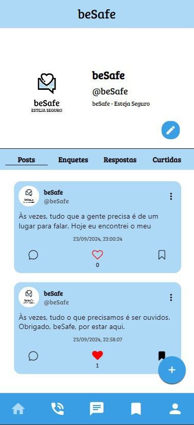
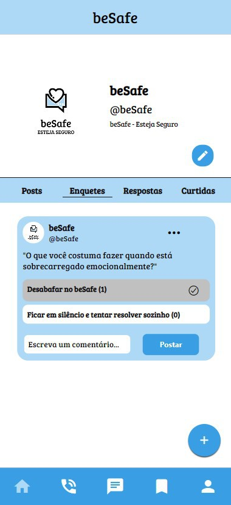
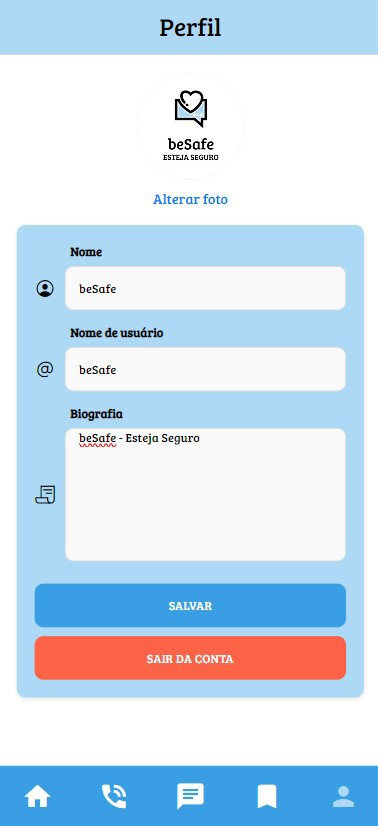

Cadastro
Aqui você realiza o cadastro no beSafe colocando um nome, um email e uma senha. Aqui você pode decidir se quer ou não ser anônimo, escolhendo entre criar um nome de usuário ou colocar sua real identidade
Descubra o beSafe, a rede social que transforma desabafos em apoio e conexão! Compartilhe suas experiências de forma anônima ou identificada em um espaço seguro e acolhedor. Junte-se a nós e inicie sua jornada de autoconhecimento e empatia!
O beSafe foi criado com o objetivo de ajudar e servir como uma rede de apoio para pessoas que têm dificuldade de falar sobre seus sentimentos, mas precisam desabafar e expressar o que sentem.
No beSafe, você pode desabafar de forma anônima, sem medo de ser julgado. Você pode criar posts e enquetes, e ver posts de outras pessoas com as quais você pode se identificar.
O beSafe não apenas serve como um meio para desabafar, mas também como uma ferramenta valiosa para promoção da saúde mental, oferecendo suporte emocional, comunidade e acesso a recursos profissionais quando necessário.
Aqui você realiza o cadastro no beSafe colocando um nome, um email e uma senha. Aqui você pode decidir se quer ou não ser anônimo, escolhendo entre criar um nome de usuário ou colocar sua real identidade
Nesta tela, você pode criar um novo desabafo ou enquete. Você pode escolher se deseja ser anônimo ou identificado, além de adicionar texto e imagens
A tela "Salvos" permite que você acesse rapidamente os posts e enquetes que você salvou para revisitar mais tarde. É uma forma prática de guardar conteúdos que te interessaram ou que você gostaria de refletir.
A tela "SOS" é um recurso essencial do beSafe. Aqui, você encontrará dois botões: um para iniciar uma conversa com um profissional capacitado e outro que conecta você ao CVV (Centro de Valorização da Vida). Essa tela reforça a importância de buscar apoio emocional.
Na tela de "Posts", você pode visualizar as suas publicações. Aqui você pode também visualizar a quantidade de curtidas e comentários seus posts tiveram
A tela de "Enquetes" permite que você crie e participe de enquetes sobre diferentes temas. Essa funcionalidade é útil para coletar opiniões ou obter feedback sobre situações específicas, além de fomentar a interação entre os usuários.
Na tela de "Perfil", você pode visualizar e editar suas informações pessoais. Aqui, você pode ver suas publicações, enquetes, e as respostas que recebeu. Também é possível ajustar seu nome, username, foto de perfil e escrever uma biografia sobre você, proporcionando uma apresentação mais completa aos outros usuários.
A nossa missão como criadores do beSafe é proporcionar um espaço seguro e acolhedor para a expressão emocional, promovendo o apoio mútuo e a saúde mental.
O objetivo é conectar pessoas que precisam desabafar, oferecer recursos de ajuda e conscientizar sobre a importância do bem-estar emocional
Desabafe, conecte-se e cuide da sua mente com beSafe!